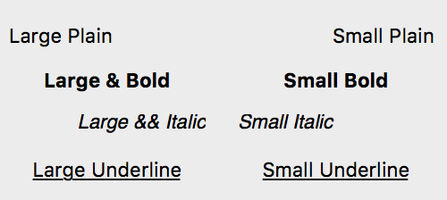
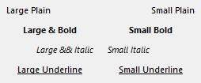

Static Text
Static text controls provide a convenient way to display text on dialogs. They often serve as labels for other controls.
There are three basic types of static text controls: left text, center text and right text controls. The text of a static text control can be aligned not only horizontally but vertically as well. Moreover if the text does not fit into the controls rectangle, DG can truncate it using an ellipse character in the middle or at the end.
By default a static text control is drawn without frame, however it can have three types of frames: static edge, client edge and modal frame.
-
 
Item type
- DG_ITM_STATICTEXT
Subtypes
-
Subtype Meaning DG_IS_LEFT Text is aligned to the left. DG_IS_CENTER Text is centered horizontally. DG_IS_RIGHT Text is aligned to the right.
Flags
- The static text control's flag can be any combination of the following vertical alignment and truncation flags:
-
Value Meaning DG_IS_VTOP Text is aligned to the top. DG_IS_VCENTER Text is centered vertically. DG_IS_VBOTTOM Text is aligned to the bottom.
-
Value Meaning DG_IS_NOTRUNC No truncation. DG_IS_TRUNCEND Truncates at the end. DG_IS_TRUNCMIDDLE Truncates in the middle. (Leaves the same number of characters from both ends of the text.)
Frame types
-
Frame type Meaning DG_FT_NONE It will be drawn without frame. DG_FT_STATIC Thin three-dimensional border with a sunken edge. 

DG_FT_CLIENT Thick three-dimensional border with a sunken edge. 

DG_FT_MODAL Thick three-dimensional border with a raised edge. 

GRC Specification
LeftText x y dx dy fontSpec [textFlag] [frameType] "text"
CenterText x y dx dy fontSpec [textFlag] [frameType] "text"
RightText x y dx dy fontSpec [textFlag] [frameType] "text"
where x and y are the pixel coordinates of the upper left corner of the static text control, dx and dy are the width and height of the control in pixels. fontSpec declares the font size and style of the control text. The optional textFlag parameter is the OR(|) combination of the vertical alignment and truncation flags. If this parameter is omitted the text is aligned to the top and no truncation is applied. If the optional frameType flag is omitted, the static text control is drawn without frame.
Possible values of fontSpec:
-
Value DG constant combination used in DGSetItemFont ExtraSmall DG_IS_EXTRASMALL SmallPlain DG_IS_SMALL | DG_IS_PLAIN SmallBold DG_IS_SMALL | DG_IS_BOLD SmallItalic DG_IS_SMALL | DG_IS_ITALIC SmallUnderline DG_IS_SMALL | DG_IS_UNDERLINE LargePlain DG_IS_LARGE | DG_IS_PLAIN LargeBold DG_IS_LARGE | DG_IS_BOLD LargeItalic DG_IS_LARGE | DG_IS_ITALIC LargeUnderline DG_IS_LARGE | DG_IS_UNDERLINE
Possible values of the vertical alignment flag:
-
Value Meaning vTop The DG_IS_VTOP flag is set. vCenter The DG_IS_VCENTER flag is set. vBottom The DG_IS_VBOTTOM flag is set.
Possible values of the truncation flag:
-
Value Meaning noTrunc The DG_IS_NOTRUNC flag is set. truncEnd The DG_IS_TRUNCEND flag is set. truncMiddle The DG_IS_TRUNCMIDDLE flag is set.
Possible values of frameType:
-
Value Meaning Default The DG_FT_NONE frame type is set. StaticEdge The DG_FT_STATIC frame type is set. ClientEdge The DG_FT_CLIENT frame type is set. ModalFrame The DG_FT_MODAL frame type is set.
Suggested sizes
- The following item height values can be suggested for static text controls:
-
Font size Item height in pixels DG_IS_EXTRASMALL 12 DG_IS_SMALL 14 DG_IS_LARGE 16 - If the static text control has a frame, increase the above values by 4 pixels in order to make enough room for the frame rectangle.
Messages
-
Message Meaning DG_MSG_CLICK The static text control is clicked. The message data parameter is always zero. DG_MSG_DOUBLECLICK The static text control is double clicked. The message data parameter is always zero. DG_MSG_MOUSEMOVE The user moves the mouse over a static text control. The message data parameter is a pointer to a DGStaticItemMsgData structure cast to DGMessageData. This structure contains information about the item itself, the keyboard state, and the mouse.
Remarks
The text of a static text control can be set, modified and retrieved by DGSetItemText, DGCatItemText and DGGetItemText, respectively. The control can display its text with any of the DG fonts. The font can be specified not only in GRC, but by the DGSetItemFont function as well. Use DGGetItemFont to retrieve the font currently assigned to a static text control.
A static text control can contain multiple lines of text. If no truncation is specified and the text doesn't fit horizontally in the control rectangle, DG automatically breaks it into multiple lines on word boundaries. Vertically partial lines are not displayed so the second and further lines can be seen only if the control is high enough to display them fully. Texts can be explicitly break into more lines by inserting new line (\n) characters into them.
When any truncation is specified the situation is a little different. First DG calculates how many full height lines can be displayed in the control's rectangle. Then it truncates the text with an ellipse character in the middle or at the end. Finally the gained text is justified according to the specified horizontal and vertical alignments.
Sometimes when labeling a control with a static text, it is advisable to set the height of both controls to the same value and assign the vCenter alignment flag to the static text in GRC. This way the static text will be vertically centered to the labeled control.
Requirements
- Version: DG 2.2.0 or later
- Header: DG.h
See Also
Dialog item types
DGCatItemText, DGGetItemFont, DGGetItemText, DGSetItemFont, DGSetItemText